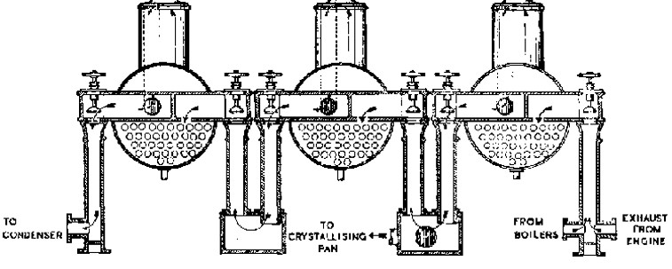

7 Story of Chemistry
“Chemistry is the branch of science which is concerned with materials of every description. It is often called the central science as it overlaps with both biology (biochemistry) and physics (physical chemistry).”
– Lister and Renshaw
Our everyday lives have been transformed by science. Yet many people remain deeply suspicious of science and in particular, of chemistry.
“It is from chemistry that the dyer acquired all the processes for extracting, toning, and fixing his colours; through it, the starcher, brewer, and distiller controlled their fermentations. It is chemistry that has allowed the cabinetmaker to vary the shades of his veneers, the varnisher to dissolve resins, the tanner to tan leather and soften hides. It is also chemistry that taught so many manufacturers how to remove the grease from wool and to smooth out silks. It alone can add some perfection to all these arts.”
– Guyton de Morveau
Chemistry is the study of substances in terms of :
Composition
What is a material made out of?
Structure
How are elementary particles put together?
Properties
What characteristics does the material have?
Reactions
What reactions does this material have with other materials?
7.1 Chemical Notations
In 1782, Guyton de Morveau stated that, in the interest of science, it was necessary to have “a constant method of denomination, which helps the intelligence and relieves the memory”.
Ideally, an element or compound should have a unique name because the proliferation of names for the same substance can lead to confusion.
In 1803, John Dalton, starts using symbols to represent atoms of different elements.
Dalton’s symbols were not the ones we use today, but circles containing distinct symbols (a dot for hydrogen, a cross for sulfur), or circles containing letters (“C” for copper,“L” for lead).
He used them singly to represent elements and in combination to show compounds.
Later, Swedish chemist, Jöns Jakob Berzelius simplified the system.
Berzelius organized 47 elements with letters alone, and he based those letters not primarily on the English names, but on the Latin ones.
7.1.1 Jöns Jacob Berzelius
Berzelius wrote a textbook for his students, and in the process, he became convinced that chemistry was in a state of confusion.
In particular, he felt the need for a more helpful method of naming and classifying chemical substances – perhaps resembling binomial nomenclature, the system developed by his fellow countryman, Linnaeus (1707-78).
He published his system in a series of articles published in 1813 and 1814. His system of chemical symbols survived and it remains the basis of chemical nomenclature today.
Having organised the elements, he then tried to create a notation for compounds which revealed their chemical nature.
At first, he indicated the numbers of atoms with superscripts, so that sulphur dioxide was written SO2.
Eventually, the subscript version (SO2) became the standard form. At first, many chemists were not impressed by the Berzelian symbols. By the mid-century, though, they were generally accepted.
7.1.2 IUPAC
The International Union of Pure and Applied Chemistry was formed in 1919 by chemists from industry and from academia.
Its primary aim in chemical nomenclature is to provide a methodology for assigning descriptors (names and formulae) to chemical substances so that they can be identified without ambiguity, facilitating communication.
The origin of the names of some elements (e.g., antimony and iron) is obscure, and lost in antiquity.
7.1.2.1 Origin of Element Names
Element names are based on:
- An element’s properties
- A mineral that the element is isolated from
- The place or area of discovery (e.g., Gallium)
- A mythological character or concept
- An astronomical object
The origin of words is known as etymology. The study of the origin of the names of chemical elements is known as elementymology.
7.2 Periodic Table of Elements
In the middle 1800s, elements were being discovered almost every decade.
This profusion of new elements, with an ever-widening range of properties soon began to provoke questions:
- Precisely how many elements were there?
- Had most of them already been discovered?
- Or would there perhaps turn out to be innumerable elements?
These questions led to speculations.
Somehow, amongst all the elements, there must be some kind of fundamental order.
John Dalton had already discovered that the atoms of each element had different weights.
Berzelius had noticed that elements had different electrical affinities.
There were also groups of elements with similar properties:
- Metals that resisted corrosion
- Combustible alkali metals
- Colorless, odorless gases
The Periodic Table is of central importance to chemistry.
It provides a logical framework for recognising patterns in the properties of elements and their compounds. It also allows us to explain trends and similarities in properties in terms of the electronic structures of the elements.
Without the Periodic Table, chemistry would be a hotchpotch of unrelated information about different substances.
7.2.1 Johan Döbereiner
Döbereiner was a professor of chemistry at the University of Jena. He was the son of a coachman, and was largely self-educated. He became a pharmacist, and attended regular local public lectures on science.
He eventually secured a position at the University of Jena, where his lectures were regularly attended by Goethe.
In 1829, Döbereiner noticed that the recently discovered bromine had properties which seemed to lie midway between those of chlorine and iodine. Not only that, it’s atomic weight lay exactly halfway between the two.
Döbereiner began studying the list of known elements, recorded with their properties and atomic weights, and eventually discovers another two groups of elements with the same pattern:
- Strontium (between calcium and barium)
- Selenium (between sulphur and tellurium)
He looked for further examples, but could find no more. Döbereiner Law of Triads only applied to nine of the fifty-four known elements.
It was dismissed by his colleagues as a coincidence.
7.2.2 Alexandre-Emile Béguyer de Chancourtois
In 1862, de Chancourtois published a paper describing a “telluric screw”, which demonstrated that there did indeed appear to be some kind of pattern amongst the elements.
The “telluric screw” consisted of a cylinder on which was drawn a descending spiral line. He was intrigued to find that the properties of these elements tended to repeat when they were read of in vertical columns down the cylinder.
It seemed that after every 16 units of atomic weight, the properties of the matching elements tended to repeat when the elements were read off in vertical columns.
De Chancourtois’s paper was published, but he used geological terms, and even introduced numerology.
The publishers omitted to include the illustration of the cylinder, rendering the article virtually incomprehensible to all but the most persistent readers.
7.2.3 John Newlands
In 1864, John Newlands came up with his own pattern of the elements.
In his research, Newlands came up with findings that bore a resemblance to those of de Chancourtois. Newlands discovered that if he listed the elements in ascending order of their atomic weights, in vertical lines of seven, the properties of the elements along the corresponding horizontal lines were remarkably similar.
The eighth element starting from a given one is a kind of repetition of the first, like the eighth note in an octave of music. He named this his ‘law of octaves’.
Sodium – potassium; magnesium – calcium, chlorine – bromine – iodine
Unfortunately, the properties of some elements especially those of higher atonic weight, simply did not tally. Even so, this is the first solid evidence that there was indeed some comprehensive pattern to the elements.
7.2.4 Dmitri Ivanovich Mendeleev
The Father of the Periodic Table is Dmitri Ivanovich Mendeleev. Mendeleev was born in Tobolsk (in Siberia). He was the 17th child in his family.
His father was the headmaster of the local school, but became blind in the year of Dmitry’s birth, leaving the mother to provide for the large family.
Mendeleyev went to school in Tobolsk, and did badly. He learnt Ancient Greek and Latin, and Mendeleyev developed a distaste of high culture which was to last a lifetime.
His brother-in-law (Bessagrin) instilled in him a deep interest in science.
7.2.4.1 The Journey to Moscow
In 1849, when Dmitry was fifteen, his mother set off with her two remaining dependent children, Dmitri and Liza – for Moscow. This meant a laborious 1,300-mile journey.
Maria Mendeleyava was now 57 years old, tired and aged will beyond her years after bringing up her huge family single-handedly, while at the same time running a factory and organizing the welfare of its workers.
But she was determined that Dmitri should receive the education his promise deserved.
In Moscow, they encountered problems enrolling into the university.
Entry from the provinces was according to a quota system, but the province Mendeleyev was from had not been given a quota yet, and so he was denied entry. In addition, they found that Siberian qualifications were not recognised in Moscow.
As a last resort, they set off for the capital, St Petersburg. Fortunately, Maria found that the head of the Central Pedagogical Institute was an old friend of her husband. Mendeleyev was given a place to study mathematics and natural science, and a government scholarship.
7.2.4.2 Being a Top Student
In 1855, Mendeleyev qualified as a teacher, taking the gold medal for the best student of his year. His first appointment was to a teaching post at Simferopol in the Crimea. He arrived to find the Crimean War in full swing, and the school at Simferopol closed for months.
He went back to St Petersburg and was appointed privat Dozent (untenured, unpaid lecturer) in the University of St Petersburg. In 1859, he managed to secure a government grant to study abroad for two years. On the advice of Borodin, he headed first to Paris, and then to Heidelberg.
In 1861, Mendeleyev returned to St Petersburg, taking up a teaching position at the Technical Institute. To his astonishment, he found that Russia simply hadn’t heard of the fundamental advances in modern chemistry which were taking place all over Europe.
He started to deliver lectures about these developments, and began attracting attention. He also write a Russian textbook on modern organic chemistry. In 1864, he became a professor, and bought a small estate two hundred miles from St Petersburg.
7.2.4.3 External Work
By 1867, he was being sent as far afield as Baku in the Caucasus to advice on the establishment of an oil industry, and Paris to organise the Russian pavilion at the Exposition Internationale.
At age 32, Mendeleyev was appointed professor of general chemistry at the University of St Petersburg. His lectures were on inorganic chemistry, but his students were hampered by the lack of an adequate textbook.
By early 1869, he had completed the first volume of his projected two0-volume The Principles of Chemistry. This was to be his masterpiece.
The end of the first volume covered the halogen group. The halogens combine readily with potassium.
So the obvious logical step was to start volume two with the alkali metals group, which contained sodium and potassium. By the morning of 14 February 1869, the two chapters were complete. The problem now was what group of elements to deal with next. The structure of the book depended on this. By 17 February, he still hadn’t come up with anything.
“I saw in a dream a table where all the elements fell into place as required. Awakening, I immediately wrote it down on a piece of paper.”
- Mendeleev
In his dream, Mendeleyev had realised that when the elements were listed in order of their atomic weights, their properties repeated in a series of periodic intervals. For this reason, he named his discovery the Periodic Table of the Elements.
In his table, where no element fitted into the pattern, he simply left a gap. H predicted that these gaps would one day be filled by elements which had not been discovered.
7.2.4.3.1 Julius Meyer
The German scientist, Julius Meyer, published a paper claiming that he had discovered the Period Table. Mendeleyev was given credit for the discovery of the periodic table because he published first (1 March 1869), whereas Meyer only published the following year.
In addition, Meyer’s conclusions were more tentative, and he couldn’t fully account for the anomalies in his table.
In 1875, Paul Lecoq de Boisbaudran announced the discovery of gallium. In 1886, Clemens Alexander Winkler discovered germanium.
7.2.4.4 Mendelevium
In 1955, element 101 was discovered by Albert Ghiorso, Bernard Harvey, Gregory Choppin, Stanley Thompson, and Glenn Seaborg at the Lawrence Berkeley National Laboratory in California.
It was named Mendelevium, in recognition of Mendeleyev’s achievements.
7.2.5 CAS Numbers
The Chemical Abstracts Service (i.e., CAS), a division of the American Chemical Society, maintains a registry of chemical substances that assigns each chemical a registry number (“CAS Number”) and a unique systematic name.
Every chemical is assigned a CAS Number.
On 8 September 2009, it recorded the 50 millionth substance in the registry.
The CAS Registry is the world’s most comprehensive and high-quality compendium of publicly disclosed chemical information. The CAS Registry can be accessed free from Common Chemistry.
CAS numbers have three uses:
- Searching for physical, chemical, or thermodynamical data on a chemical compound
- Ordering a chemical compound
- When looking for safety information (MSDS) on a chemical compound.
Each element is tested using 64-17-5 (i.e., ethanol).
7.3 Washing Soda
Washing soda is the common name for sodium carbonate (Na_2_CO_3_). It is used in the manufacture of soap, detergent, textiles, glass and paper.
Nicolas Leblanc invented an industrial process to make pure washing soda.
Before Leblanc, soap was a handmade luxury for the rich and a medicinal salve for the sick. After him, soap became an everyday part of modern life.
It revolutionised personal cleanliness and prevented scabies, an itchy skin disease. When the British government removed its soap tax in 1853, the price of soap dropped and the incidence of scabies plummeted. Soap also reduced the incidence of typhus.
7.3.1 King Louis XVI’s Reward and Later Years
Nicolas Leblanc was a poor orphan (his father died when he was nine) who studied chemistry with Jean Darcet, one of France’s first chemistry
Louis XVI offered 12,000 livres for the best way to turn common salt into washing soda for the manufacture of soap. For Leblanc, the contest represented a chance at attaining wealth, security, and professional acclaim.
Chemists had long known that sea salt could be transformed into sodium carbonate, and French scientists understood that the two compounds are related. No one could make the process work on a large, industrial scale, though.
At 42, Leblanc took up the challenge.
He knew the first step – mixing salt with sulphuric acid to make sodium sulphate and hydrochloric acid (readily available):
\[\begin{equation} 2NaCl + H_2SO_4 \longrightarrow Na_2SO_4 + 2HCl \end{equation}\]
The challenge was the second step. Leblanc wrestled with the problem for five years between 1784 and 1789, and then stumbled upon the solution. As Leblanc heated his sodium sulphate with charcoal, he added a key new ingredient – limestone (calcium carbonate, CaCO3):
\[\begin{equation} Na_2SO_4 + CaCO_3 + 2C \longrightarrow Na_2CO_3 + CaS + 2CO_2 \end{equation}\]
Unfortunately for Leblanc, in July 1789, Parisian mobs stormed the Bastille and triggered the French Revolution. The timing could not have been worse. The absolute monarchy was gone, and with it all changes of his winning Louis XVI’s prize money.
Jean Darcet confirmed Leblanc’s discovery, and recommended it to their patron, the Duke or Orleans. He wrote:
“I the undersigned, professor of chemistry at the Royal College of France, …, certify that … with the same process, it will be easy to establish a factory.”
– Jean Darcet
The Duke of Orleans was visiting London, so in February 1790, Leblanc crossed the English Channel on his first trip outside France. Orleans agreed to invest $8 million in a start-up factory to exploit Leblanc’s secret process.
With a year of getting the duke’s support, Leblanc opened a small factory at Saint-Denis, and started to transform his laboratory project into a large-scale factor.
Leblanc also applied for a patent. On 19 September 1791, Leblanc became the 14th inventor granted a patent under France’s new laws.
“The last letter received pierced my soul, for I learnt that they have suspended the payment of the pensions and pledges of the people who were attached to me. I cannot tell you how I was affected by that. I put this sorrow among the biggest sorrows that I have suffered.”
– Leblanc in wriitng to his mistress
For the next two years, Leblanc struggled to get his factory going amid wartime shortages of sulphuric acid and capital. The Duke of Orleans was arrested, and two days before his execution, he wrote the above to his mistress
Among those affected was Nicolas Leblanc. The Duke of Orleans was executed in November 1793, and Leblanc’s factory was seized. The Committee of Public Safety called for patent holders of soda processes to publish their methods:
“A true republican does not hesitate to relinquish the ownership of even the fruits of his mind when he hears the voice of his country entreating for aid.”
– Committee of Public Safety
Leblanc submitted his discovery to the committee, which published a brochure describing his process in minute detail as the French government wanted as many factories as possible to manufacture washing soda.
Within months of the execution of the Duke of Orleans, Leblanc had lost his salary, the factory, and his patent. The revolution had already cost him his chance of winning Louis XVI’s prize money. Meanwhile, Leblanc’s wife had fallen ill, and he had four children to support.
The government was sympathetic about the loss of his patent, and appointed him to a patchwork of administrative and study posts, most of them unpaid.
On 16 January 1806, Leblanc committed suicide by shooting himself in the head.
7.3.2 Leblanc Pollution
Leblanc’s process continued to be used, and produced much pollution, devastating entire communities. For each ton of washing soda made, three quarters of a ton of HCl spewed into the air, poisoning farmland. As HCl poured into the waterways, it combined with sulphur to make H2S gas, spreading a rotten egg smell for miles around:
\[\begin{equation} 2NaCl + H_2SO_4 \longrightarrow Na_2SO_4 + 2HCl \end{equation}\]
In 1856, the French National Academy of sciences concluded that “scarcely anyone has done so much for industry and received so little reward as did Leblanc.”
In 1863, the British Parliament passed the Alkali Act, which forced the Leblanc factories to reclaim 95% if the HCl that they produced. Angus Smith, the Alkali Inspector assigned to enforce the law, demonstrated that industrial towns suffered from higher sulphate levels than did the countryside.
He also coined the term acid rain, and air pollution became a public issue. Bu the 1870s, Leblanc factories emitted less than 0.1% of the HCl they produced. The rest was reclaimed and sold. People started cleaning themselves with soap on a regular basis too. Cheap soap prevented scabies, a disease almost forgotten.
7.4 Sucrose
Sugar cane, a giant perennial grass, Saccharum officinarum, originated in tropical southern Asia and was known in the Middle East and China between 8000 and 6000 BC.
Arabs used sugar as a medicine and brought it to the Mediterranean where, grown by peasants, it was expensive luxury. Christopher Columbus brought sugar cane to plant in the Caribbean islands on his second voyage in 1493.
Spain, England and France grew sugar cane with slave labor on their island colonies, and their product was far cheaper than European sugar cane grown with free labor.
7.4.1 Triple Effect Evaporator

Norbert Rillieux was born on 17 March 1806 to a wealthy white man and his longtime mistress. Norbert’s father, Vincent Rillieux, was a cotton merchant and engineer. His mother, Constance Vivant, was a free African American from a rich real estate family in New Orleans.
She herself was the daughter of a white father and a black mother. Norbert Rillieux’s birth was registered as “Norbert Rillieux, quadroon libre, natural son of Vincent Rillieux and Constance Vivant.” The words quadroon libre, stipulated that Norbert was a free African American with more white ancestry than black.
In the 1820s, Vincent Rillieux sent Norbert to Paris for his education, but more specifically, to master its science and sugar technology. France was vitally interested in sugar, and they were studying the sugar-making process intensively. Scientists had known for roughly 75 years that many plants contain sucrose, and Napoleon had launched a crash programme to make France independent of imported cane sugar.
After Napoleon’s defeat, French scientists continued their research, trying to make beet sugar grown by free farmers in France competitive with cane sugar grown by slaves in the New World.
7.4.2 Rillieux’s Experiments
Edmund Forstall, a planter and banker in New Orleans, asked Norbert to become the chief engineer of a sugar factory under construction there. In 1833, Norbert left Paris and returned to New Orleans. Norbert quit his job with Forstall almost as soon as it began. Forstall had a disagreement with Norbert’s father, and the younger Rillieux honoured his family ties.
Rillieux began to engineer his laboratory into a practical apparatus. He needed a sugar planter to let him build and test his equipment.
Finally, Judah Benjamin and Theodore Packwood offered Rillieux the use of their sugarhouse. They agreed to pay Rillieux $13,500 if his sugar was as good and plentiful as the previous year’s crop.
Rilleux’s triple-effect evaporator was a tremendous success, and Rillieux travelled around Louisiana installing his machinery. About thirteen of Rillieux’s systems were installed before the Civil War.
Racial problems caused Rillieux to permanently to France.
7.4.3 Retirement
German farmers adopted Rillieux’s equipment enthusiastically. By 1888, Rillieux systens were refining beet sugar in 30 German, 100 Austrian, and 20 Russian factories.
Rillieux-produced beet sugar added both sweets and meat to European diets. Sugar consumption more than doubled during the last 25 years of his life. Penned livestock could be fed molasses and beet residue.
Rillieux married, and studied Egyptology and hieroglyphics, never returning to Louisiana.
7.5 Clean Drinking Water
Cholera outbreaks can occur sporadically in any part of the world where water supplies, sanitation, food safety and hygiene practices are inadequate.
Overcrowded communities with poor sanitation and unsafe drinking-water supplies are most frequently affected.
Cholera is caused by the bacterium Vibrio cholerae.
People become infected after eating food or drinking water that has been contaminated by the faeces of infected persons.
Raw or undercooked seafood may be a source of infection in areas where cholera is prevalent and sanitation is poor.
Vegetables and fruit that have been washed with water contaminated by sewage may also transmit the infection if Vibrio cholerae is present.
Improved hygiene and clean drinking water is the solution to cholera.
Queen Victoria’s personal physician, John Snow, removed the handle from the polluted Broad Street pump in London to prevent the waterborne disease.
7.5.1 Secret Affairs
Edward Frankland’s mother, Margaret Frankland, worked as a maid for the Gorsts, a wealthy family of distinguished lawyers and judges.
The Gorsts’ 20-year-old son Edward was living at home, and the two young people had a secret affair.
When Margaret Frankland became pregnant, the Gorsts were horrified as any hint of scandal would destroy the young man’s prospects.
His father functioned as the queen’s chief legal officer in Lancashire County, and his family was expected to be an unblemished example for all.
An illegitimate child disgraced both mother and father, and the latter was expected to support the child or face the consequences in court.
Edward Gorst set aside an annuity of £1,200 for Margaret Frankland and her child – provided that his identity was never revealed.
He paid Margaret the interest from the annuity, about £60 per year. Eventually, the annuity was probably replaced b a one-time payment of £1,500.
7.5.1.1 Becoming a Pharmacist
Margaret Frankland was banished from the Gorsts’ household, and moved back to her family home outside Garstang to give birth and raise her son.
On 18 January 1825, Edward Frankland was born in Churchtown, Lancashire.
The child’s name combined his father’s first name and his mother’s maiden name. Thus the Gorsts were protected from publicity, but the child was not.
To anyone who knew him, Edward Frankland’s use of his mother’s unmarried name was assign of “bastardy,” a Victorian disgrace.
Frankland wanted to become a doctor, but could not afford medical school. So in 1840, when Frankland was 14, she apprenticed him to a pharmacist.
As an apprentice, he worked more than 70 hours a week, wheeling heavy casks of treacle through town and hauling 100-pound sacks up a steep and narrow staircase. To grind a pound of cocoa, he worked a 20-pound pestle continuously for a day. To make ointment, he spent more than 24 days grinding six pounds of mercury into 14 pounds of lard.
7.5.1.2 Friendship with John Tyndall
Frankland’s analytical chemistry skills were enough to land him a teaching job. At one of the schools, he befriended a fellow teacher, John Tyndall, who later became a prominent British physicist.
The two men had a mutual pact to wake up at 4:00 a.m. each day and study together. Frankland taught Tyndall chemistry, and Tyndall taught Frankland biology and mathematics.
A year later, Frankland and his friend, John Tyndall left to earn their doctorates from Bunsen in Germany.
After his studies, he returned to England in 1849 to become a professional chemist. Frankland worked on organic compounds containing arsenic, and coined the term “organometallic” to describe this group of compounds.
Frankland became aware that each element has a definite combining power.
Valency, as the principle is called today, is one of the fundamental concepts in chemistry. The valence of an atom equals the number of bonds that an atom has for combining with other elements. Hydrogen has a valence of one.
Frankland sends his report on valency to the Royal Society on May 10, 1850. Unfortunately, the secretary laid the report aside and forgot about it for a year!
In the meantime, August Kekulé ignore Frankland’s work, and claimed the valence theory for himself.
In contrast, Frankland’s work in organometallic compounds attracted considerable attention, and when the University of Manchester opened, Frankland was appointed its chemistry professor.
7.5.1.3 Transforming Chemistry Education
At age 40, he was appointed to a prestigious professorship to replace August Wilhelm Hofmann at the Royal College of Chemistry. In addition to his regular duties, Frankland was responsible for analysing London’s water supply.
Frankland transformed chemistry education by integrating the laboratory into the curriculum. He compiled a list of 109 experiments that students needed to understand, and wrote a textbook that became a standard for chemistry instruction.
Frankland developed the system for writing chemical formulae and for depicting the bonds between the atoms in molecules.
As he synthesised more and more isomers, compounds with the same formulae but different molecular structures, he found traditional formulae confusing – they showed the types and numbers of elements but provided no clue as to how the atoms were arranged inside the molecule.
To solve this problem, Frankland depicted the atoms in functional groups, and drew lines between them to indicate the bonds between the elements.
7.5.1.4 Attaining Success
Cholera killed more than 20,000 people in England in the early 1830s.
In 1865, Frankland became London’s water consultant, and a member of the Rivers’ Pollution Commission in 1868. At the time, little was known about clean water (Robert Koch only identified the cholera bacillus in 1883).
While some experts thought that decaying matter directly caused disease or indirectly nurtured disease-causing microbes, others regarded faeces-rich water as no more than unacceptably disgusting. Terrified of cholera, people demanded sanitary water.
7.5.1.5 Discovering Helium
In 20 October 1868, Frankland co-discovered helium with English astronomer, Joseph Norman Lockyer.
They observed a yellow line in the solar spectrum, which Lockyer named the D3 Fraunhofer line.
Frankland and Lockyer decided to name the element Helios, the Greek word for Sun.
Although no one knew how cholera was spread, it was clear that there was a relationship between cholera and unsanitary water.
Frankland: “My motto, unlike that in criminal cases, has always been to assume water to be guilty until it is proven innocent.”
He stressed that water’s appearance should not be used as an indicator of its safety.
7.6 Saccharin
Saccharin is a low calorie sweetener. It is 300 times sweeter than sugar.
Saccharin has been used as a non-nutritive sweetening agent since 1907.
Saccharin quickly rose to popularity as the first calorie-free sweetener, when it became known as the “poor man’s sugar” during World War II when real sugar was in short supply and thus more expensive.
Unfortunately saccharin had a bitter aftertaste, so there was an increasing demand for a new improved sweet substance.
In 1937, 59 years after saccharin had been discovered, Michael Sveda, a graduate student at the University of Illinois, discovered cyclamate, another sweetener.
7.6.1 Saccharin Story 1
Professor Ira Remsen of Johns Hopkins University was lecturing to his class using samples of newly-prepared chemicals before him. During the lecture, “he unconsciously poked his pencil into several samples”.
Later, in his office, Professor Remsen happened to be troubled over a tough problem. While contemplating over it, he unconsciously touched the tip of the pencil to his lips and was amazed by the incredible sweetness.
He rushed back to his lecture hall and systematically tasted all the chemicals until he found the one prepared by Fahlberg.
7.6.2 Saccharin Story 2
Constantine Falhlberg discovered saccharin while working in Ira Remsen’s laboratory at Johns Hopkins University. He spilled a chemical on his hand when he was researching new and interesting uses of coal tar derivatives.
Later on in the day when he was eating dinner, he noticed his bread rolls tasted sweeter than normal. However, when he mentioned this fact to his wife, she told him that they tasted the same as usual.
After realising he hadn’t washed his hands, Falhberg traced the sweet taste to be coming from the chemicals.
7.6.3 Saccharin and Cyclamate
The FDA approved cyclamate in 1951. Cyclamate was blended with saccharin and sold as “Sweet ‘n’ Low”, which quickly became popular in the United States. Cyclamate was also used to sweeten soft drinks.
in 1970, the Food and Drug Administration (FDA) banned cyclamate from all dietary foods in the United States, due to suspicion of inducing cancer in experimental animals.
A study by Wagner found an increased incidence of bladder carcinomas in rats. Cyclamate is converted to a very toxic metabolite, cyclohexylamine.
Studies in laboratory rats during the early 1970s linked saccharin with the development of bladder cancer, especially in male rats. It was banned in 1981.
Human epidemiology studies (studies of patterns, causes, and control of diseases in groups of people) have shown no consistent evidence that saccharin is associated with bladder cancer incidence.
In 2010, the U.S. Environmental Protection Agency removes saccharin from its list of hazardous substances.
7.7 Caffeine
Caffeine is a natural alkaloid found in coffee beans, tea leaves, cocoa beans, cola nuts and other plants.
It is probably the most frequently ingested pharmacologically active substance in the world, found in common beverages (coffee, tea, soft drinks), products containing cocoa or chocolate, and medications, including headache or pain remedies and over-the-counter stimulants
In North America, coffee (60–75%) and tea (15–30%) are the major sources of caffeine in the adult diet, whereas caffeinated soft drinks and chocolate are the major sources of caffeine in the diet of children.
Coffee (Coffea Arabica and Coffea canephora) is one of the most widely consumed beverages in the world and is also a major source of caffeine for most populations.
The caffeine in coffee is a bioactive compound with stimulatory property on the central nervous system and a positive outcome on long-term memory.
7.7.1 Friedlieb Ferdinand Runge
German chemist Friedlieb Ferdinand Runge was born on 8 February 1794, the son of a pastor and the third of seven children.
While working as an apprentice in his uncle’s pharmacy, he got a drop of henbane juice in his eye, and noticed that his pupil dilated.
Based on experiments on a cat’s eye, he went on to write a dissertation on the toxic effects of atropine, a chemical found in plants like henbane and deadly nightshade.
Runge studied chemistry at the University of Jena, Germany, under Johan Döbereiner, an adviser to the writer Johann Wolfgang von Goethe. His fellow students called him “Dr Gift” – the German word for poison.
Döbereiner arranged for Runge to perform a demonstration of atropine’s ability to make cats’ pupils dilate for Goethe. Goethe was suitably impressed, and at the end of their meeting he presented Runge with a packet of coffee beans, suggesting that their chemical components might be worth investigating. Runge studied the beans, and later that year, he discovered caffeine.
7.7.1.1 Runge’s Other Inventions
In 1819, while still a student, Runge made another remarkable discovery for which he is seldom credited, isolating quinine from cinchona bark. The discovery of quinine, the first effective antimalarial compound, is usually attributed to Pierre Joseph Pelletier and Joseph Bienaimé Caventou, who reported their work a year later.
He also invented paper chromatography, a method for separating chemicals.
Runge died on 25th March 1867, at the age of 73. He lived the last years of his life in poverty and obscurity.
7.8 MSG

One evening in 1907, Kikunae Ikeda, a chemist at the University of Tokyo, was feeling especially curious while he enjoyed a dinner of his wife’s dashi and tofu soup.
Rather than simply enjoying his dinner like any other night, he stopped to ponder what made dashi not only so delicious on its own, but so complementary to other savoury foods. He suspected that the unique flavour of one of its primary ingredients, the seaweed kombu (giant kelp), might hold the secret to dashi’s unique flavour-boosting ability.
Back at his lab at the University of Tokyo, Ikeda ran dashi through a series of evaporations and tests to isolate its individual chemicals as solids.
Eventually, he came across a brownish crystalline substance that had a mild but intriguing flavour, and the same flavour-boosting powers of dashi. The residue was mostly glutamic acid.
Ikeda became the first scientist to associate glutamic acid with savouriness in food. He called this taste umami – based on the Japanese root “umai,” meaning “delicious,” or simply “good.”
7.8.1 Founding Ajinomoto
He refined and patented a way to produce pure glutamic acid, stabilising it with a salt ion to create what we now know as monosodium glutamate.
He called the company he founded to produce MSG Ajinomoto (“the essence of taste”), thus forever linking umami, the taste, with glutamic acid, the chemical. It remains one of the largest producers of MSG in the world today.
Ajinomoto began selling MSG in 1909 and in the next few years expanded across east Asia. In 1947, pure MSG was introduced for sale in America as the “flavour awakener” Ac’cent.
7.8.2 Chinese Restaurant Syndrome
Robert Ho Man Kwok, a Chinese-American doctor in Maryland, wrote a letter in the 4 April 1968 issue of the New England Journal of Medicine under the heading “Chinese Restaurant Syndrome”:
“For several years since I have been in this country, I have experienced a strange syndrome whenever I have eaten out in a Chinese restaurant.”
– Ho Man Kwok
The most prominent symptoms included “numbness at the back of the neck, gradually radiating to both arms and the back, and general weakness and palpitation.”
7.9 Mauveine
Mauveine is the first synthetic organic dye.
Before the synthesis of mauveine from aniline by Perkin in 1856, the only materials available for the coloration of textiles were obtained from plants or animals (e.g., the insect cochineal).
Also known as aniline purple and Perkin’s mauve, mauveine was soon used to dye silk and other textiles. In 1862, Queen Victoria popularized the colour by wearing a mauveine-dyed gown.
Mauveine consists of as many as 12 molecules.
William Henry Perkin grew up on London’s East End. He dreamt of becoming an artist until he was showed some simple chemical experiments. From then, he began dreaming about an apprenticeship in an apothecary’s shop.
In 1853, William enrolled in the Royal College of Chemistry (later, it becomes a part of Imperial College), where he studied with August Wilhelm Hoffman, a German chemist who had come to London at the personal invitation of Queen Victoria’s German husband, Prince Albert.
7.9.1 August Wilhelm Hoffman
Prince Albert hoped Hofmann could teach Englishmen to use chemistry to solve important commercial problems concerning natural dyes, drugs and other essential commodities. Like many chemist of his day, Hofmann was analysing and testing compounds extracted from natural sources. In particular, he was investigating the chemicals in cold tar, an abundant waste by-product of coke production and coal gas lighting.
Hofmann speculated that he might be able to turn aniline in to quinine, and set William to investigate this. William had his own ideas on how this could be achieved, but his work for Hofmann left him little time to work on them.
Over Easter vacation in 1856, William decided to work on his ideas at home. Perkin began with a cold tar derivative with almost the same formula as quinine, but without as much oxygen. He chose different compounds to mix with, and with aniline, a black precipitate was produced.
Treating it with ethanol, he discovered that it made a ravishingly beautiful purple dye – a synthetic dye! Natural dyes were very expensive and coloured fabrics were still a luxury for most of the world’s population. Growers of natural dyes were also hard-pressed to keep up with the accelerating demands of the cotton textile industry.
After experimenting with the solution on silk, Perkin realised that he had discovered a process for transforming the chemicals in coal tar into a colourfast purple dye. He mailed a sample to a Scottish dye time. After exposing the sample to sunlight, the owner replied:
“If your discovery does not make the goods too expensive, it is decidedly one of the most valuable that has come out for a very long time. This colour is one which has been very much wanted in all classes of goods, and could not be obtained fast on silks, and only at great expense on cotton yarns.”
– Owner of a dye shop
Perkin and his brother prepared a few ounces of the dye – enough to apply for a patent, which they did no 26 August 1856. When he told Professor Hofmann that he was starting his own business, the professor was annoyed and discouraging.
Instead of buckling under, Perkin dropped out of college and plunged ahead with his purple dye. He promised himself that later in life, he would return to scientific research.
7.9.2 Imperial College’s Speech
“The purple in the hoods you and other Imperial graduates wear were chosen because of Perkin. The colour purple symbolises the spirit of endeavour and discovery, and the risk-taking nature that characterises those with an Imperial education and training.
Like William Perkin you, our postgraduate students, are risk takers. When you enrolled, you knew you were taking on challenging advanced courses of study and research. […] You have undertaken projects not knowing where they will lead.”
– Alice Petry Gast
7.10 Cocaine
Archaeological studies in South and Central America has established the antiquity of coca use. Analysis of mummified human remains from Northern Chile indicates the use of coca as early as 1000 B.C. These records establish that the use of coca has been ongoing for over 3,000 years among the native peoples of the Andes.
Under Incan rule, coca was used for numerous purposes, including mystical, religious, social, and medicinal uses. In 1532, a Spanish expedition conquered the Inca. The Spanish conquerors then attempted to eradicate the use of coca in the native cultures.
The Spanish failed, and decided to exploit coca growth instead.
Subsequently, coca use became more widespread throughout the former Incan empire, and the custom of giving agricultural workers a ration of coca leaves along with their daily wage began. Coca use continues to be a daily staple in the life of many Andean workers.
The Aymara people are an indigenous population of the Andes and Altiplano regions of South America. “Khoka” is an Aymara word that means “the tree.”
This is the origin for our modern usage of “coca”.
The coca shrub is indigenous to South America, Mexico, Indonesia, and the West Indies, with numerous alkaloid components.
After Paolo Mantegazza graduated as a medical doctor, he embarked upon a journey that ultimately brought him to Salta, Argentina. He practiced from 1855 to 1858 in Argentina and Paraguay where he came into contact with coca-chewing Indians.
Based on his experience with the locals in the Peruvian Andes, he became convinced of the widespread benefits of coca including reduction of fatigue, improvements to one’s mood, and even the increase of sexual vigour.
7.10.1 From Coca to Cocaoine
When he returned to Italy in 1859, he published On the Hygenic and Medicinal Virtues of Coca, a monograph that combined physiological reporting with vivid descriptions of its effect on his mental state.
The leaf, he observed, aids digestion and has a central stimulant action on the nervous system. At low doses, this is barely noticeable, but at higher ones it impinges on consciousness to a marked degree. Muscular power is increased: “a new strength gradually drenches one’s organism in every sense, as a sponge soaks itself with water,” and “one feels stronger, more agile, and readier for any kind of work.”
By pushing his dose to the practical maximum, repeatedly chewing his way through an ounce of leaf at a time at top speed, Mantegazza was able to achieve “the delirium of coca intoxication.”
This was marked by a racing pulse, minor heart palpitations, a surge of “extraordinary happiness,” and, in the mind’s eye, “images that were more bizarre and splendid, in terms of colour, than could ever be imagined.”
Mantegazza’s work brought coca into the purview of German pharmacists, who had for the previous 30 years been working systematically through the alkaloid chemistry of medicinal plants.
7.10.1.1 Isolating Cocaine
In 1859, Friedrich Wohler of Gottingen University procured 25 kg of coca leaf from Lima, which he turned over to his young assistant Albert Niemann.
Niemann isolated from them a crystalline organic base that was named, according to the convention established by morphine, “cocaıne.”
Niemann reported that cocaine crystallized in “colorless transparent prisms” and had the bitter taste characteristic of an alkaloid; unsually, it left “a peculiar numbness, followed by a sense of cold when applied to the tongue.”
In 1863 an Italian chemist named Angelo Mariani brought onto the market a wine called Vin Mariani which had been treated with coca leaves. By the late 1880s, his product range would include Pate Mariani (cocaine lozenges for catarrh), The Mariani (a concentrated coca tea recommended for long walks), and Pastilles Mariani (for coughing fits).
Prior to the advent of local anaesthesia, operations on the eye were infrequent and the results most often unsatisfactory. General anaesthesia did not allow the patient to cooperate with the surgeon, e.g., by gazing in a particular direction.
7.10.2 Medical Uses of Coca
The Euro-American enthusiasm for coca quickly cooled in the early twentieth century with the increasing concerns of the addictive properties and poor side effect profiles witnessed with the use of cocaine.
Relief of Gastrointestinal Upset
Coca leaf tea is taken to combat stomach pain, intestinal spasm, nausea, indigestion, and even constipation and diarrhoea. It is a comprehensive remedy that restores balance to the digestive system. It relieves painful oral sores and aids in the healing of oral lesions. It is used for toothaches as well.
Environmental Stress Treatment
It is a remedy for dealing with the stresses of life at high altitude. help the user withstand hypoxia, cold, and hunger. Hand and foot temperatures were lowered in Andean people who used coca. Although the thermal difference between control and experimental subjects was not great, this small difference could be advantageous in decreasing the amount of heat loss in extreme environments.
Hunger Treatment
Coca chewing is thought to decrease the feeling of hunger in Andean peoples. Chewing coca leaves has been found to elevate blood glucose above the fasting level, which lends scientific credibility to the native belief that coca staves off hunger pains.
Altitude Illness Treatment
Coca chewers report less head pain and dizziness associated with working at high altitudes. The percentage of native peoples using coca increases with altitude. Physiological adaptations to cold may be enhanced by coca use.
The belief in coca as an uplifting agent for those individuals working in a high altitude environment is not without its naysayers. Many have argued that it is merely a “spurious correlation” between coca chewing and high altitude.
7.10.3 Cocaine Abuse
Abuse refers to the use of any drug, primarily by self-administration, in a manner that deviates from the approved social or medical pattern within a given culture.
The term “drug abuse” thus conveys the notion of social disapproval.
The first epidemic of cocaine use in America occurred during the late 19th century.
Initially, there were no laws restricting the consumption or sale of cocaine. In fact, cocaine was freely available in drug stores, saloons, from mail-order vendors, and even in grocery stores.
Soon enough, the ill effects of cocaine became apparent, and by the 1920s cocaine was the most feared of all illicit drugs.
Most states began enacting laws against cocaine use.
7.11 DDT (i.e., Dichlorodiphenyltrichloroethane)
The full name for DDT is 1-chloro-4-[2,2,2-trichloro-1-(4-chlorophenyl)ethyl]benzene.
DDT enters an insect by dissolving the thin layer of fatty substances that repel water from the creature’s waxy outer skin. Penetrating the layer, DDT reaches the insect’s nerve endings and gradually paralyses vital nerve centres. After a short period of extraordinary excitement, insects sprayed with DDT become progressively paralysed, fall on their backs, and die.
As Othmar Zeidler had already synthesised DDT (and also described its properties and developed the methods to manufacture it) in 1874, when Geigy took out a Swiss patent in March 1940, it was for DDT’s use as an insecticide.
7.11.1 Paul Hermann Müller
Paul was born on 12 January 1899, just outside Basel. He was an average student, and in his formative years, he witnessed two dangerous crises caused by a lack of effective insecticide.
During World War I, Switzerland suffered from serious food shortages. As Switzerland is mountainous, and most of its arable land is pasturage. Switzerland needed to protect its crops from insects, but could not.
While Müller was a student at the University of Basel, the greatest typhus epidemic in history erupted. An estimated 25 – 30 million Russians contracted typhus, and almost three million died.
After he graduate, Müller started work at the J.R. Geigy Corporation (today known as Novartis). Geigy was moving into a new field of research – insecticides. Company chemists discovered a compound that permanently protected woollens from clothes moths and their larvae.
Geigy’s moth proofing agent was a stomach poison for moths and other keratin-eating insects. It had a strong affinity for woollens, was harmless to warm-blooded animals and people, and had no offensive odour. As a chlorinated hydrocarbon, it was extremely persistent despite exposure to light and moisture.
7.11.1.1 Early Insecticides
After mothproofing wool, the next logical step for Geigy was to invent an insecticide that killed more kinds of pests. Natural insecticides made from plants, including pyrethrum, rotinone and nicotine were expensive, not persistent, and were easily destroyed by light and heat.
The most popular insecticide at the time was lead arsenate, and combination of two dangerous poisons. The US used more than ten million pounds of lead arsenate yearly, and residues on West Coast apples had poisoned customers as far away as Great Britain.
To Müller, just starting out on his search for an effective insecticide, the situation looked desperate indeed. He realised that “only a particularly cheap or remarkably effective insecticide had any prospects of being used in agriculture.
Geigy’s research director was interested in gastric poisons that insects of their larvae had to swallow along with their food. Müller realised that not all insects eat in the same way. Many serious diseases are spread by insects that suck human blood for food. Only a contact poison would affect them.
7.11.2 Searching for an Ideal Insecticide
Müller outlined the desirable characteristics of an ideal insecticide:
It should be toxic to insects but harmless to mammals, fish and plants - it should also:
- Act rapidly
- Have no irritating odour
- Inexpensive
- It should affect as many insects as possible
- It should be chemical stable for a long time
Müller had several clues to guide his search. First, he knew from Henri Martin’s mothproofing work that a chlorinated hydrocarbon worked as a gastric moth poison. Second, he early experiments showed him that compounds with the group CH2Cl has some insecticidal effect. Third a 1934 article in the Journal of the Chemical Society of London described the preparation of diphenyltrichloroethane, which Müller found to be somewhat poisonous to the flies in the glass box.
Taken together, these hints convinced him that a compound containing chlorine should make a good insecticide.
By the autumn of 1939, Müller had tested 349 compounds. For his 350th compound, Müller combined sophorific chloral with cholorobenzene and a catalyst, sulphuric acid. His product was dichlorodiphenyltrichloroethane (DDT).
Spraying DDT on the flies in his glass cage, Müller was amazed to see them fall helplessly onto their back in ten minutes. In every test he tried, the insects died, although it sometimes took them several hours or days. He was even more astounded when he cage remained poisonous for weeks and killed any fly that touched its walls.
7.11.3 Tests on DDT
Test #1
DDT’s first big field test occurred in Naples (where 90% of the population had lice) on 1 October 1943. Naples had been typhus-free for 30 years – largely due to soap, washable clothing, and public baths – so its inhabitants had no immunity. Within a month a typhus epidemic was underway with a death rate approaching 25%.
1.3 million people were hand-sprayed, one at a time, with DDT. This kept a person louse-free for several weeks with few to no known side effects. A winter outbreak of typhus had been stopped for the first time in history.
7.12 Ammonia
Haber was born on 9 December 1868 in Breslau, Prussia (now, Wrocław, Poland). His mother died within days of his birth, and his father, a civic leader and successful trader of dyes and chemicals, rejected him and left his upbringing to various relatives.
As a young man, Fritz wanted to become a chemist, but his father insisted that he join the family business. To prepare to enter his father’s business, he studied chemical technology in an alcohol distillery in Hungary, a Solvay soda factory in
Within six months of joining his father’s firm, Fritz invested and lost a large amount of the company’s money. At long last, his father acknowledged that his son might be more suited for scientific research than for commerce.
To succeed in a university, Haber would have to overcome two obstacles: (1) his spotty chemistry education; and (2) anti-Semitism. German universities rarely promoted Jews to professorships. Since Haber’s family rarely attended synagogue, he pragmatically converted to Christianity in 1892.
Fritz was attracted to a new field, physical chemistry, and enrolled into the Karlsruhe Institute of Technology.
In 1901, Haber married Clara Immerwahr.
A month into their marriage, Clara became pregnant. Three months after the Habers’ son Hermann was born, Haber left for a five-month trip to the United States. (Haber wasn’t a great husband.)
In 1906, at the age of 38, he became a professor. The leading scientific and social problem of the day: How to turn atmospheric nitrogen into desperately needed ammonia for fertilizer.
On a mountain hike one hot summer day, Haber would be begin, he stuck his head into a well for a drink of water without noticing that an ox was doing the same thing. Simultaneously lifting their heads, they discovered, to their mutual shock, that they had exchanged heads. That is why Haber would chortle he had the head of a stubborn ox.
7.12.1 Some Background
Europe’s population had tripled over the past 200 years as public relief expanded, the severity of epidemics declined, and food crops were diversified. Because of this, Europe feared that it would run out of food.
Hydroelectric power plants and local coal gas and coke factories produced small amounts of ammonia that could be used to make fertilizer for crops, but the quantities did not come close to meeting farmers’ needs. Indeed, without North American and Ukrainian grain shipments and without fertilizer shipments from Peruvian guano, Europe in the early 1900s might have experienced another famine like the Irish disaster of the 1840s.
Europe looked to chemists to feed its growing populations. William Crookes stated, “It is the chemist who must come to the rescue of the threatened communities. It is through the laboratory that starvation may be ultimately turned to plenty.”
Chemists knew they had to turn the nitrogen in air into ammonia, but they did not have a solution. The two nitrogen atoms that make up the a molecule of nitrogen are held together by one of the strongest known chemical bonds, and no one could break the nitrogen molecule apart long enough to make ammonia.
7.12.2 Incentives
7.12.2.1 Economic
The fact that Germany depended on imported fertilizer more than any other country gave it a special stake in the problem. The industrialization of Germany’s sugar beet and potato farms was intimately linked to its use of natural fertilizer, especially nitrogen compounds from the marine bird manure imported from Peru, Chile, and Bolivia. Yet experts predicted that Europe would exhaust South America’s guano in 30 years.
7.12.2.2 Military
Nitrogen compounds are also used in explosives. In 1900, when the Boer war broke out between German and English immigrants in South Africa, Anglo-German relations soured. In the event of a European war, Britain’s navy would block the import of guano Germany needed to make nitrates for explosives.
Ostwald and Walther Nernst, the world’s two leading physical chemists worked on nitrogen fixation, but got nowhere.
7.12.3 Conditions Required for Ammonia Production
Haber had knowledge of industrial chemistry, and was able to blend the talents of skilled technicians, industrialists and scientists from different disciplines.
Robert Le Rossignol developed the seals needed to maintain high pressures in an experimental chamber. Friedrich Kirchenbauer built precision equipment needed for the reaction.
In his Nobel Prize speech, he thanked them, and shared his prize money with both men.
Haber and Rossignol discovered that hydrogen and nitrogen would stay combined only under extraordinarily harsh conditions: temperatures of 200°C and atmospheric pressure 200 times stronger than normal.
Such conditions were unheard of at the time, yet even they produced ammonia extremely slowly. To speed up the process, Haber and Rossignol used osmium and uranium as catalysts.
Later, it was found that a mixture of iron and metal oxides worked best. Haber patented his process.
7.12.4 Haber at the Kaiser Wilhelm Institute
In 1910, Haber was offered a job in Berlin at the Kaiser Wilhelm Institute of Physical Chemistry and Electrochemistry. Leopold Koppel offered to finance the Institute with two conditions: (1) the Kaiser must thank him publicly; and (2) Fritz Haber must be the institute’s director. Haber three other conditions: (1) he must be a tenured stated official with power to run the institute; (2) earn 15,000 marks yearly; and (3) live free in an institute villa.
BASF opened its factory in 1913. The Haber-Bosch process remains the cheapest and most efficient method of turning atmospheric nitrogen into compounds that plants can use.
Haber’s 1913 contract with BASF gave him 1.5 pfennigs for every kilogram of ammonia produced. By the mid-1920s, BASF had paid him enough to start rumours that the Habers dined on gold plates.
He became close friends with Albert Einstein. During Einstein’s divorce from his first wife, Mileva, Haber drew up Einstein’s financial arrangement with her, promised her the Nobel Prize money that Einstein was expected to win, and mediated between Mileva and Einstein.
Haber’s own family life suffered as he became more famous.
7.12.5 Chemical Weapons
Clara rejected their newfound wealth, and preferred a semi-socialistic lifestyle.
World War I broke out, and the military asked Haber to find a chemical substitute for traditional munitions. France was contemplating the use of tear gas, which is not fatal.
The Hague Peace Conference of 1899 and 1907 banned the use of unusual, new weapons that might cause unnecessary suffering.
Haber believed that poison gas would be more humane than high explosives, and no worse than flying shrapnel.
Haber agreed to find a chemical weapon, and invented poison gas. He personally directed the burial of 6,000 cylinders of liquid chlorine along a 1½ mile line near Ypres, Belgium.
On 22 April 1915, the Germans opened all the canisters simultaneously, releasing 150 tons of chlorine within ten minutes.
Vomiting and coughing in violent spams, the soldiers retreated in panic. Chlorine corrodes the eyes, nose, mouth, throat, and lungs, and can asphyxiate its victims.
Seven thousand people at Ypres were poisoned, and 350 died. The Emperor promoted, by imperial decree, Haber to the rank of captain.
Clara pleaded with Haber to stop his poison gas work. She was horrified by the experiments conducted on animals. Early in the war, an experiment in the lab exploded after Haber left the room. A young physicist, Otto Sackur, one of Clara’s classmates, was killed. Haber later found a job at the institute for Sackur’s daughter.
7.12.5.1 Boycotting Poisonous Gas
The Nobel prize unleashed an international storm of protest.
Except for one Englishman, the non-German winners boycotted the ceremonies, primarily because of Haber. Press reaction to the prizes was extraordinarily hostile. Many of the German winners had signed the manifesto supporting the invasion of Belgium.
Allied countries singled out Haber because his ammonia process had lengthened the war by four years. The 1925 Geneva Protocol prohibited chemical and biological weapons.
7.12.6 Haber’s Nobel Prize
Sackur’s death disturbed Clara profoundly. The week after the poison gas attack at Ypres, Clara gave her husband the ultimatum – stop working with poison gas or she would commit suicide.
On 1 May 1915, he threw a dinner party to celebrate his success. At dawn (2 May 1915), Clara shot herself in the heart. 2.5 years later, Haber married Charlotte Nathan.
When Germany surrendered, Haber plunged into a severe depression. A year after Germany’s surrender, Haber won the 1918 Nobel prize for turning nitrogen into ammonia for fertilizer. Nothing was said about the use of ammonia in explosives.
7.12.7 Searching for Gold in Seawater
Haber was deeply disheartened by Germany’s defeat. The Versailles Treaty had levied a 132-million-mark indemnity. Haber searched the seas for gold.
Accepting contemporary estimates that seawater naturally contained six milligrams of gold per metric ton, he figured that the oceans must contain eight million tons of gold, and extraction would be economically feasible.
Haber and Johannes Jaenicke started sampling seawater, and five years later, he found that contemporary estimates of seawater’s gold content were a thousand times too high. Haber gave up the idea.
When Hitler became chancellor in 1933, he issued an order that no Jews would be allowed in civil service.
Haber was exempt from this due to his civil service during World War I. However, his employees were not. 75% of them were Jewish, and would have to be dismissed. Haber took a stand and resigned on 30 April 1933.
“My most important goals in life are that I not die as a German citizen and that I not bequeath to my children and grandchildren the civil rights of second-class citizenship, as German law now demands that they accept and endure on account of their Jewish grandparents and great-grandparents. The second thing that’s important to me is to spend my last years in a scientific community of people, with honour but without heavy duties.”
– Sir William Pope
Haber accepted the invitation of Sir William Pope to join him at Cambridge University. The invitation was arranged by Haber’s former foes – Harold Hartley and Frederick Donnan of the Imperial College.
7.12.8 Haber’s Death
“Haber’s significance for science and its nurturing is not remotely exhausted by his own scientific works and with those of his school. He was not merely a man of science and technology; he was also highly competent in matters of organisation and financial management … Haber was a Jew, as were the overwhelming majority of his colleagues. This made conflict with the National Socialist state inevitable.”
– Speech on Haber in 28 June, 1934
On 29 January 1934, Haber collapsed with severe heart pains in a hotel room at Basel, Switzerland. Later that day, he suffered a heart attack, and died within a few hours.
He was buried in a Basel cemetery. At his request, the body of his first wife, Clara Immerwahr was buried next to his. On 29 January 1935, the Kaiser Wilhelm Society held a memorial service for Haber.
During World War II, the Nazis used the pesticide Zyklon B in concentration gas chambers.
7.12.8.1 Note on Zyklon B
Zyklon B was not invented by Fritz Haber. Walter Heerdt, Bruno Emil Tesch and Gerhard Peters invented it in 1922.
It was an insecticide used in Germany before and during World War II to disinfect ships, barracks, clothing, warehouses, factories, granaries, and more.
It was produced in crystal form, creating amethyst-blue pellets. Since these Zyklon B pellets turned into a highly poisonous gas (hydrocyanic acid, HCN) when exposed to air, they were stored and transported in hermetically-sealed, metal canisters.
7.13 Tetraethyl Lead (i.e., TEL)
Midgley was born on 18 May 1889. He majored in mechanical engineering in Cornell University. He worked for Charles Kettering, the inventor of the electrical self-starting ignition. Kettering assigned Midgley the problem of engine knock.
He improvised a high-speed camera to photograph the engine through a quartz window in a cylinder, and showed that part of the fuel inside the engine cylinder was exploding prematurely.
By chance, he found that iodine eliminated knock, but was too expensive, and it corroded and clogged the engine.
On 9 December 1921, tetraethyl lead, Pb(C2H5)4, was found to eliminate knock. Tetraethyl lead (TEL) went on sale on 1 February 1923.
Many workers died in the process of manufacturing TEL, and General Motors paid the U.S. Bureau of Mines to conduct a study. The Bureau agreed to refer only to the trade name “Ethyl” without using the scientific term that included “lead”.
Because of the deaths in the manufacture of TEL, it became an occupational, rather than a broader, environmental issue.
7.13.1 Pro-Lead versus Anti-Lead
The U.S. Surgeon General convened a hearing, and two camps formed.
The men engaged in industry, chemists, and engineers, take it as a matter of course that a little thing like industrial poisoning should not be allowed to stand in the way of industrial advance. On the other hand, the sanitary experts take as a matter of course that the first consideration is the health of the people.
The pro-lead camp – the petrochemical and automobile industries – represented the corporate backbone of the United States, and had the upper hand.
The Surgeon General’s committee completed its study, and it was announced that TEL would add less lead to the atmosphere than house paint, production and distribution of TEL was resumed.
Standard Oil petrol stations put on the sign: “Ethyl is Back.” The medical adviser of Standard Oil strongly urged corporate president Walter Teagle to abandon TEL, but his advice was unheeded.
Within two decades of the introduction of TEL, the octane rating of petrol rose from 55 to 75.
By 1928, Kettering was in charge of the General Motors research department, and Frigidaire was part of GM. Every refrigerant known at the time (e.g., sulphur dioxide and ammonia) was toxic, inflammable, or both.
7.13.2 Refridgeration
“At least fifteen and perhaps more persons died in recent months in Chicago from gases used in artificial refrigeration. … Four persons have been victims of the gas [methyl chloride] in the last ten days in Chicago. Dr. Kegel [Health Commissioner] compiled a list of twelve persons who, he said, had been made ill by the gas, and a list of seven who had died from it in the last few weeks.”
– New York Times, 2 July, 1929
If refrigeration and air-conditioning were to become popular, a safe refrigerant would have to be found.
Methyl chloride, another refrigerant, proved lethal in some apartments in the 1920s when pipes connecting water-cooling equipment to refrigerators upstairs leaked.
7.13.2.1 CFCs
Midgley identified a new class of potential compounds: the chlorofluorocarbons, later nicknamed CFCs, and trademarked Freon by Du Pont. Dichlorodifluoromethane was found to be noninflammable and nontoxic. It was later called R-12 (for “Refrigerant-12”).
At the American Chemical Society annual meeting in April 1930, Midgley demonstrated R-12 by lighting a candle, inhaling the R-12, holding it in his lungs for a moment, and the slowly exhaling, blowing candle flames out.
Air-conditioning and refrigeration took off!
Safe refrigeration revolutionised medicine by making vaccinations effective and by reducing food poisoning and diarrheal diseases. All vaccines must be refrigerated during shipment and storage.
Before refrigeration, the failure rate of vaccination was high as vaccines kept at room temperature were effective for less than a week.
Many types of bacteria thrive in unrefrigerated food, and in summer, milk kept more than 12 hours had to be boiled. Convenience was another advantage of refrigeration.
7.13.3 Refridgeration Impacts
Safe refrigeration revolutionised medicine by making vaccinations effective and by reducing food poisoning and diarrheal diseases. All vaccines must be refrigerated during shipment and storage.
Before refrigeration, the failure rate of vaccination was high as vaccines kept at room temperature were effective for less than a week.
Many types of bacteria thrive in unrefrigerated food, and in summer, milk kept more than 12 hours had to be boiled.
Convenience was another advantage of refrigeration.
7.13.3.1 Impacts of CFCs
At the University of California, Irvine, Sherwood Rowland and Mario Molina discovered that CFCs could deplete Earth’s atmospheric ozone layer, which blocks the sun’s damaging ultraviolet rays. The scientists reported their findings in 1974. Rowland and Molina convinced sceptical industrialists, policymakers, and the public of the danger of CFCs.
The scientists’ advocacy – and the discovery by other researchers that the ozone layer over the Antarctic was thinning – led to worldwide phase-out of CFCs and the development of safer alternatives. Rowland, Molina and Paul J. Crutzen shared the 1995 Nobel Prize in Chemistry.
7.13.4 Midgley’s Death
In September 1940, Midgley contracted polio, paralysing him from the waist down. He wrote:
“I have been spending my spare moments in bed figuring out the statistical probability of a 51-year-old male catching poliomyelis, as I have, and this comes out to be substantially equal to the chances of drawing a certain individual card from a stack of playing cards as high as the Empire State Building. It was my tough luck to draw it.”
– Midgley in writing
He could sit up for only for short periods of time, and found travel difficult.
On the morning of 2 November 1944, Carrie Midgley found Midgley dead. At 55, he had strangled on the overhead ropes and pulleys that he had designed for getting in and out of bed. His friends spread the story that he had become accidentally entangled, and the story stuck for 50 years.
Death and cemetery certificates, however, reveal what must have been obvious to his friends – a mechanical engineer of Midgley’s prowess would not have accidentally strangled on his own invention. In despair, Midgley had carefully planned his death.
7.14 Phosphorus and Vitalism
Vitalism is a theory that an organic molecule cannot be produced from inorganic molecules, but instead can only be produced from a living organism or some part of a living organism.
Vitalists hold that living organisms are fundamentally different from non-living entities because they contain some non-physical element (a “vital force”) or are governed by different principles than are inanimate things.
Vitalism suggested that an organic molecule such as urea cannot be synthesised solely from inorganic sources.
Phosphorus is an element that is essential for life.
Hennig Brand (c. 1630–c. 1710.) discovered phosphorus in 1669, in Hamburg, Germany, preparing it from urine. (Urine naturally contains considerable quantities of dissolved phosphates.) Brand called the substance he had discovered phosphorus (“light bearer”) because it was luminous, glowing in the dark.
Although Brand kept his process a secret, phosphorus was discovered independently in 1680 by Robert Boyle.